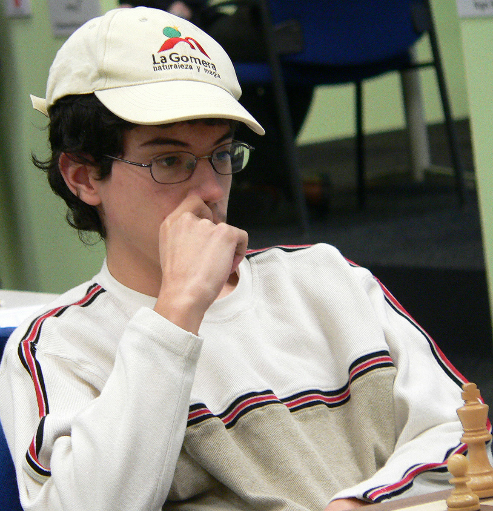
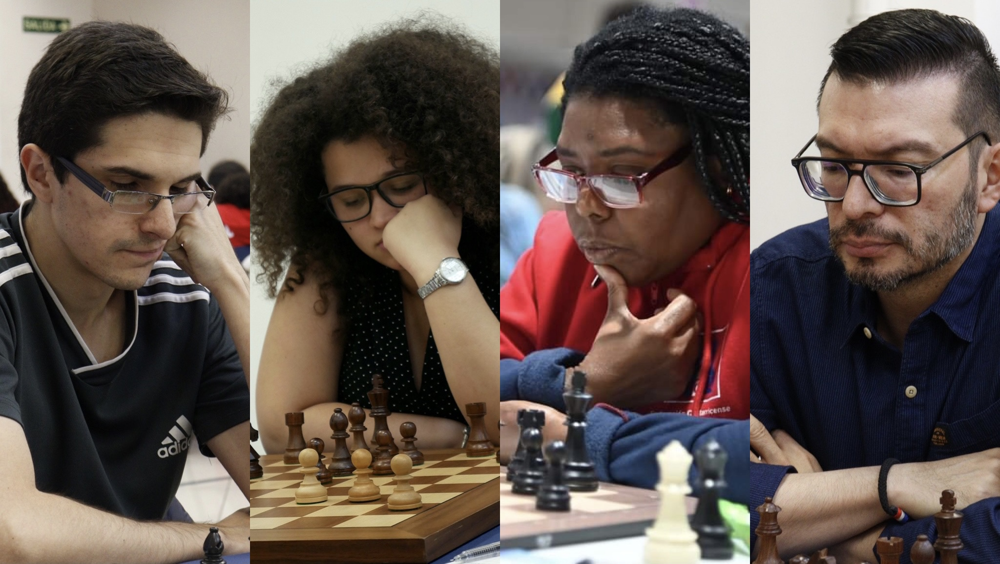

Alejandro Ramirez Alvarez es el jugador de ajedrez que representa a Costa Rica en el mundo

El mejor jugador de ajedrez en el mundo es Magnus Carlsen

Esta es la seleccion de ajedrez de Costa Rica

Este es el apartado de ajedrez, con los mejores jugadores y seleccion
Alejandro Ramirez Alvarez es el jugador de ajedrez que representa a Costa Rica en el mundo
El mejor jugador de ajedrez en el mundo es Magnus Carlsen
Esta es la seleccion de ajedrez de Costa Rica